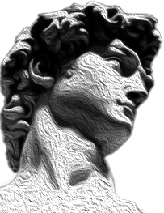
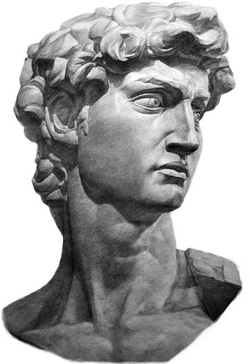
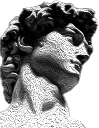
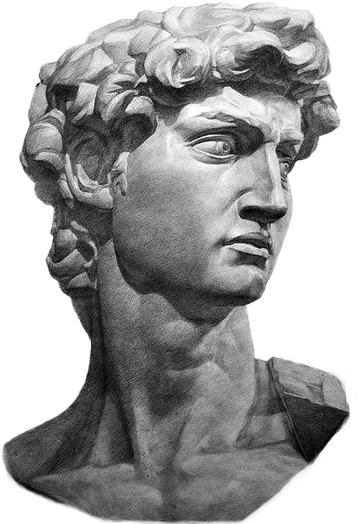
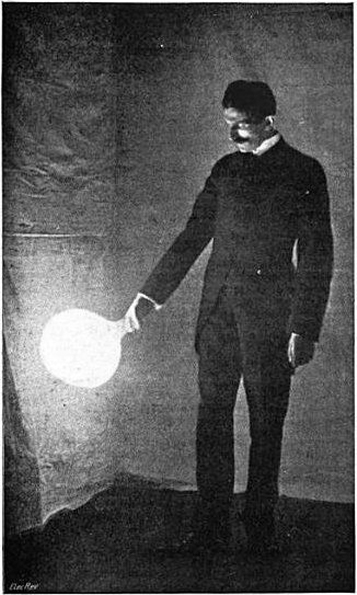

Si j'étais une peintre je serais . . .
Rachel Ruysh une artiste néerlandaise du 18em siecle, car son style est totalement unique, elle dégage par ses représentations botaniques plus vrai que nature, une élégance à travers des couleurs chaudes. Elle a également l’habitude de peindre la nature morte avec un fond sombre. Ruych est un exemple d’artiste qui se dévoue dans son art, cette artiste a peint de son enfance jusqu’à sa mort.
Rachel Ruysh
 



DAVID
Si j'étais une statue je serais
Si j'étais une statue je serais
Si j'étais une statue je serais
Si j'étais une statue je serais
Si j'étais une statue je serais
Si j'étais une statue je serais
Si j'étais une statue je serais
Si j'étais une statue je serais
Si j'étais une statue je serais
Si j'étais une statue je serais
La statue de David réalisée par Michel-Ange durant la Renaissance. Du fait de son contexte historique, elle
représente pour moi le symbole de la puissance et de la force à travers les détails physiques que le mouvement
de la Renaissance permet d’exprimer.
Michel-Ange décide de sculpter celui-ci avant son combat.
Michel-Ange puise dans la Bible pour nourrir son inspiration.
Le combat de David contre Goliath compte parmi les épisodes les plus fameux des récits bibliques, et figure dans
le premier livre de Samuel.
“L'histoire de toute société jusqu'à nos jours n'a été que l'histoire de luttes de classes.”
Si j'étais un influenceur je serais...
Karl Marx, l’un des plus grand influenceur du 20em
siècle, cette homme m’impressionne par la qualité de ses ouvrages.
Son analyse de la société contemporaine durant l’avènement de l’industrialisation et les liens qui concerne
l’économie et le travail,
m'a fasciné. Karl est historien, sociologue, économiste et philosophe. il est l’instigateur d’un courant de
pensée qui a changé la vision du capitalisme. Karl Marx est le créateur du marxisme et du communisme avec son
ami Engels.
1818-1885
Si j'étais un inventeur je serais
NIKOLA TESLA
Nikola Tesla, associé puis rival de Thomas Edison a cause du mode de transport de l’électricité, il a opposé son
courant alternatif face au courant continue de Thomas Edison. Tesla est avant tout un avant-gardiste doté d’une
imagination débordante,
il avait plus de 800 brevets. Ce qui me fascine chez lui c’est son mode de réflexion. Il pratiquait ce qu’on
appelle le « MIND MAP », c’est la faculté de pouvoir établir tout un plan dans son esprit sans avoir besoin de
l’écrire.
Il pouvait alors tester de potentiels inventions directement dans son esprit. À ce jour il est l’inventeur de la
Radio, la télécommande, la robotique…
Durant les dernières années de sa vie, Nikola passait la plupart de son temps à nourrir les pigeons, il est mort en 1943 seul sur son lit d’hôtel.
MINIMALISME
SI J'ÉTAIS UN MOUVEMENT ARTISTIQUE
JE SERAIS LE MINIMALISME
Le minimalisme, aussi appelé « art minimal » est un courant artistique qui influence
grandement le design actuel.
À la fois à l’Expressionnisme abstrait et Pop Art, l'art minimaliste illustre la simplicité, la sobriété et
l'ergonomie des structures. L'idée principale est de maximiser des moyens économique. Cette tendance se
retrouve dans les domaines des arts appliqués,
l’architecture et le graphisme. Les artistes Wassily Kandinsky et Piet Mondrian en sont les précurseurs.
Kandinsky enseigne à l’école du
Bauhaus.
MARTIN GARRIX
++ ++ ++
SI J'ÉTAIS UN DJ...
++ ++ + +
+
+
Martin Garrix, c’est garce à lui que je me suis lancé dans la musique, il a été la première source
d’inspiration à mes yeux.
Par son talent et l’importance qu’il a eu dans le monde de l’électro, il a montré à des millions d’artistes
que par le travail et la passion on peut passer de composer des sons dans sa chambre
à mixer devant des milliers de spectateurs à tout juste 17 ans. Il représente pour moi un exemple
d’accomplissement en tant qu’artiste et une personnalité authentique malgré sa célébrité
SOUNDCLOUD
SI J'ÉTAIS UNE PLATEFORME
JE SERAIS SOUNDCLOUD
Souncloud, plateforme de distribution d’audio
qui permet pour les indépendants comme professionnels de diffuser des musiques, podcasts, sets et plus encore.
Soundcloud permet aux artistes de tout genre, de ce faire un nom sur la scène musicale comme:
Xtentacion, Petit Biscuit, Flume …
C’est par cette plateform que j’ai posté en ligne mes premières musiques et que j’ai eu des avis. Elle permet
aux jeunes artistes d’exprimer leurs arts librement et gratuitement.
Page Soundcloud